| [ Team LiB ] |
|
14.4 Directional Sensitivity and OperabilityIn a number of examples in this textbook, we have noted that the design of a process can limit the ability to control the process. For example, if the "gain" for an input-output pairing is not large enough, then there is a limit to how large a setpoint change can be made before the manipulated input saturates (hits a constraint, such as a valve being fully open or closed). For multivariable systems, the effect of a particular input on a particular output is influenced by the other inputs. For example, consider the mixing tank of Example 14.3. A change in the hot-stream flow rate can significantly affect the temperature if the cold-stream flow rate remains constant. If the cold-stream flow rate changes simultaneously, however, the change in the hot-stream flow rate may not change the temperature. There are two ways of exploring these multivariable effects. One is to apply a SVD to the steady-state process gain matrix; this is an inherently linear procedure. An alternative is to "map out" an operating window or the possible range of process outputs that corresponds to a range of possible process inputs. This can be done with either the linear model or a fundamental nonlinear model. In this section, we first present the SVD technique, followed by the operating window technique. SVDThe SVD can be used to predict the directional sensitivity of a process. The process gain matrix is decomposed into three matrices, 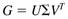 where U is the left singular vector matrix, S the diagonal matrix of singular values, and V the right singular vector matrix. The left and right singular vector matrices are both orthonormal matrices; that is, each column of the matrix is orthogonal to all other columns and the columns each are unit length. The diagonal singular value matrix is ordered so that the largest singular value is in the (1,1) position. Note that the standard notation for SVD is to use U to represent the left singular vector matrix. Please do not confuse this with the u vector commonly used to represent the vector of manipulated inputs. The left singular vector matrix indicates the strongest and weakest output directions, while the right singular vector matrix indicates the strongest and weakest input directions. The ordered matrix of singular values provides the "magnitude" of the strongest and weakest directions. The ratio of the minimum and maximum singular values is known as the condition number of the matrix. Large condition numbers are indicative of ill-conditioned systems, which effectively lose a degree of freedom (not all inputs are truly independent). This analysis has the following control-related implications. It is relatively easy to make a setpoint change in the strongest output direction (indicated by the first column of the left singular vector matrix), and it is relatively hard to make a setpoint change in the weakest output direction (indicated by the last column of the left singular vector matrix). Here we use the mixing tank example to illustrate the use of SVD analysis. Example 14.3, continuedThe singular value decomposition of the mixing tank gain matrix (steady state, s = 0) is (see Section 14.8 for the MATLAB calculation) 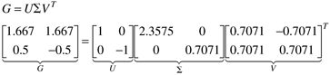 The first column of the U (left singular) matrix indicates that output 1 (liquid height) is the strongest output direction, while the second column indicates that output 2 (temperature) is the weakest input direction. The first column of the V (right singular) matrix indicates that the strongest input direction is to increase (or decrease) both inputs by the same amount, while the second column indicates that changing both inputs in opposite directions (decreasing one, increasing the other) results in the weakest effect. The matrix of ordered singular values (S) indicates that the strongest direction has 3.33 times (2.3575/0.7071) the effect of the weakest direction. These results have the following physical interpretation. A simultaneous increase in both the hot (input 1) and cold (input 2) flow rates will increase the tank height (output 1) but will not change the outlet temperature (output 2). Similarly, a decrease in the hot flow rate simultaneously with an increase in the cold flow rate will not change the tank height but will result in a temperature decrease. First, consider a simultaneous increase in both flow rates (notice that the "magnitude" of the input vector is 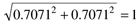 and refer to this as input vector a: 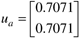 The output for this particular input can be found from 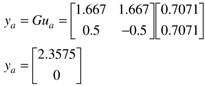 That is, the scaled height increases by 2.3575, but there is no change in temperature. This can be viewed in Figure 14-3, where the input vector is in the direction (u1,u2) = (0.71,0.71) and the output vector is in the direction (y1,y2) = (2.36,0). Figure 14-3. Input vector; output vector.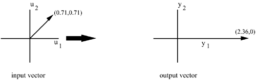 Now, consider a decrease in hot flow rate simultaneously with an increase in cold flow rate (again, notice that the "magnitude" of the input vector is 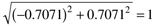 ) and refer to this as input vector b: 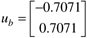 The output can be found from 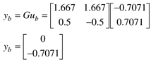 That is, the scaled temperature decreases by 0.7071, but there is no change in height. Notice that we can construct Figure 14-4, where the "unit circle" on the left represents all possible input vectors with a length of 1. The input vectors ua and ub are also shown. The ellipse on the right represents the corresponding set of outputs (obtained from y = Gu). Notice that a is the longest output vector and b is the shortest. That is, a unit input in the a direction results in an output in the a direction shown, with a length of the largest singular value. Similarly, a unit input in the b direction results in the output shown, with a length of the smallest singular value. All other inputs result in output vectors with lengths between the smallest and largest singular values. Figure 14-4. Input to output mapping.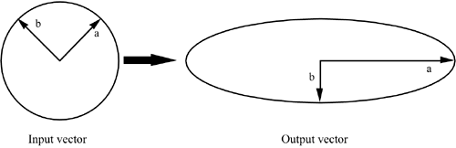 A minor disadvantage of the SVD analysis is the assumption that all possible input vectors are the same length. For this example, you could argue that it is possible for both the hot and cold flows to be at their maximum values of 1. A slightly more realistic interpretation of the input-output mapping is then shown in Figure 14-5. Figure 14-5. Input to output mapping.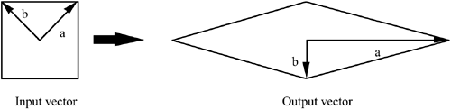 The output space, in physical (rather than scaled) variables, is shown in Figure 14-6. Notice that the linear analysis predicts negative height values, which clearly cannot be obtained in practice. Figure 14-6. Linear output space in physical coordinates.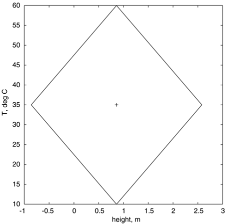 Operating WindowThis approach is similar to the "rectangular" mapping shown in the previous example. The idea is to map the effect of a region of process inputs onto a region of process outputs. Here, simulations are performed using the steady-state nonlinear model, with various values for the inputs. Example 14.3, continuedThe nonlinear steady-state modeling equations result in the two steady-state output equations 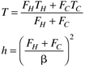 Here it is understood that the steady-state values are being used, so the subscript s has been neglected. The flow coefficient is 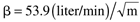 under these conditions. For the flows bounded between 0 and 50 liters/minute each, we find the output region shown in Figure 14-7. The vessel will overflow for tank heights greater than 1.72 m. Figure 14-7. Output operating window based on nonlinear model. The input space is a rectangle with flows between 0 and 50 liters/min.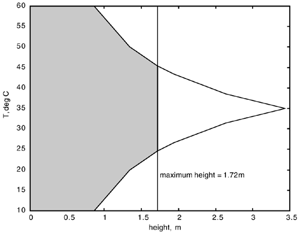 Notice that some high and low temperatures cannot be obtained at heights between 0.86 and 1.72 m; this is also predicted by the "linear rectangle" analysis shown earlier. At low tank heights, however, the entire temperature range is feasible; this is not predicted by the previous linear analysis and is a nonlinear effect. We have shown that the SVD provides insight about the strong and weak input and output directions. The primary limitation is the assumption of a linear model. Linear models are suitable for perturbations from a nominal operating point and are generally very useful for control system design. After all, the purpose of a controller is to maintain the process close to a desired operating point. However, linear models usually do not predict the behavior of a nonlinear system over the entire range of operating conditions. To explore a "window" of operating conditions, the nonlinear model should be used. If operating the process at a different operating point is desired, the model can be linearized at that point for controller design and analysis. Another limitation to the analysis presented in this section is that, like the RGA, it is based solely on steady-state information. Dynamics certainly play an important role, but this steady-state analysis provides a quick screening tool to understand physical limitations to steady-state operating conditions. |
| [ Team LiB ] |
|